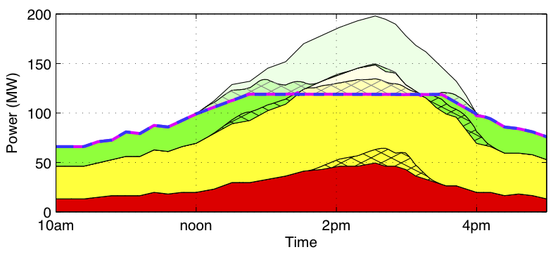

|
Jacob Beal
Senior Scientist
Raytheon BBN Technologies
10
Moulton Street
Cambridge, MA, USA 02138
I am also a Research Affiliate of
University of Iowa Electrical and Computer Engineering. |

Primary
E-mail: jakebeal@ieee.org
Corporate E-mail:
jake.beal@raytheon.com - Unreliable
Raytheon's email handling is in flux, so I cannot depend on this address.
Phone: (617) 873-7676
CV
(last updated January, 2019)
|
This page last updated on June 21st, 2019. This page is
mirrored at GitHub and BBN
Jump to:
Publications |
Tutorials and Survey Talks |
Other Talks |
Professional Activities |
Students
My blog, Jake
Beal's Next Step, is where I post general thinking about my
research, plus updates regarding publications and talks.
Key Ongoing Projects
- Protelis: an aggregate
programming language based on computational fields and embedded in
Java.
- Synthetic
Biology: using high-level languages, design automation, and
predictive modeling to control the behavior of living cells
Other Important Links
About Me
I am a Senior Scientist at BBN Technologies.
I am also a research affiliate of
the University of Iowa.
Previously, I was also a research affiliate of MIT, where I did my graduate and postdoctoral work.
The uniting theme of my research is "engineered self-organization,"
which is the production of predictable aggregate behavior from locally interacting elements.
At present, my investigations are mainly in the domains of
synthetic biology (the predictive engineering of desired behaviors in living cells),
and aggregate and spatial computing
(the description and control of systems of many weakly connected computing devices,
and an extension of amorphous computing).
Previous research subjects have included work on human-like intelligence and various learning and reasoning systems.
At BBN, I am a member of the
Distributed Systems group in the Intelligent Software & Systems
business unit.
At the University of Iowa, I collaborate with members of the
Electrical and Computer Engineering department.
I don't plan to post any significant amount of my non-professional life on this web page.
Publications most likely to be of interest are marked with a
. This is a fairly complete list,
including early and obsolete work.
-
From Distributed Coordination to Field Calculus and Aggregate Computing
Mirko Viroli, Jacob Beal, Ferruccio Damiani, Giorgio Audrito, Roberto Casadei, Danilo Pianini.
Journal of Logical and Algebraic Methods in Programming, online September 2019, to appear vol. 109, article 100486, December 2019.
-
Communicating Structure and Function in Synthetic Biology Diagrams,
Jacob Beal, Tramy Nguyen, Thomas E. Gorochowski, Angel Goni-Moreno, James Scott-Brown, James Alastair McLaughlin, Curtis Madsen, Benjamin Aleritsch, Bryan Bartley, Shyam Bhakta, Mike Bissell, Sebastian Castillo Hair, Kevin Clancy, Augustin Luna, Nicolas Le Novere, Zach Palchick, Matthew Pocock, Herbert Sauro, John T. Sexton, Jeffrey J. Tabor, Christopher A. Voigt, Zach Zundel, Chris Myers, and Anil Wipat.
ACS Synthetic Biology, online July 2019.
-
Specifying Combinatorial Designs with the Synthetic Biology Open Language (SBOL)
Nicholas Roehner, Bryan Bartley, Jacob Beal, James McLaughlin, Matthew Pocock, Michael Zhang, Zach Zundel, and Chris J. Myers.
ACS Synthetic Biology, online June 2019.
-
Synthetic Biology Open Language (SBOL) Version 2.3
Curtis Madsen, Angel Goni Moreno, Umesh P, Zachary Palchick, Nicholas Roehner, Christian Atallah, Bryan Bartley, Kiri Choi, Robert Sidney Cox, Thomas Gorochowski, Raik Grunberg, Chris Macklin, James McLaughlin, Xianwei Meng, Tramy Nguyen, Matthew Pocock, Meher Samineni, James Scott-Brown, Ysis Tarter, Michael Zhang, Zhen Zhang, Zach Zundel, Jacob Beal, Michael Bissell, Kevin Clancy, John H. Gennari, Goksel Misirli, Chris Myers, Ernst Oberortner, Herbert Sauro, Anil Wipat.
Journal of Integrative Bioinformatics, online June 2019, from doi:10.1515/jib-2019-0025
-
Synthetic Biology Open Language Visual (SBOL Visual) Version 2.1
Curtis Madsen, Angel Goni Moreno, Zachary Palchick, Umesh P, Nicholas Roehner, Bryan Bartley, Swapnil Bhatia, Shyam Bhakta, Mike Bissell, Kevin Clancy, Robert Sidney Cox, Thomas Gorochowski, Raik Grunberg, Augustin Luna, James McLaughlin, Tramy Nguyen, Nicolas Le Novere, Matthew Pocock, Herbert Sauro, James Scott-Brown, John T. Sexton, Guy-Bart Stan, Jeffrey J. Tabor, Christopher A. Voigt, Zach Zundel, Chris Myers, Jacob Beal, Anil Wipat.
Journal of Integrative Bioinformatics, online June 2019, from doi:10.1515/jib-2018-0101
-
Opportunities and Challenges in Applying Artificial Intelligence to Bioengineering
Fusun Yaman, Aaron Adler, and Jacob Beal.
chapter in ``Automated Reasoning for Systems Biology and Medicine,''
ed. Petro Lio, Paolo Zuliani, Springer Publishing, pp 425--452, online June 2019.
-
TASBE Flow Analytics: A Package for Calibrated Flow Cytometry Analysis,
Jacob Beal, Cassandra Overney, Aaron Adler, Fusun Yaman, Lisa Tiberio, and Meher Samineni.
ACS Synthetic Biology, 8(7), pp 1524--1529, May 2019. (cached PDF)
-
Robustness of the Adaptive Bellman-Ford Algorithm: Global Stability and Ultimate Bounds
Yuanqiu Mo, Soura Dasgupta, and Jacob Beal.
IEEE Transactions on Automatic Control, online March 2019, to appear 64(10), October 2019.
-
The Morphogen Circuit Builder and Compiler
Bryan Bartley, Brian Basnight, Jesse Tordoff, Jacob Beal, Ron Weiss.
11th International Workshop on Bio-Design Automation (IWBDA), July 2019.
-
SBOL Visual 2 Ontology
Goksel Misirli, Jacob Beal, Thomas E. Gorochowski, Guy-Bart Stan, Anil Wipat, Chris Myers.
11th International Workshop on Bio-Design Automation (IWBDA), July 2019.
-
The share operator for field-based coordination
Giorgio Audrito, Jacob Beal, Ferruccio Damiani, Danilo Pianini, and Mirko Viroli.
International Conference on Coordination Languages and Models (COORDINATION '19), June 2019.
-
A Framework for Self-Adaptive Dispersal of Computing Services
Aaron Paulos, Soura Dasgupta, Jacob Beal, Yuanqiu Mo, Khoi Hoang, J. Bryan Lyles, Partha Pal, Richard Schantz, Jon Schewe, Ramesh Sitaraman, Alexander Wald, Christabel Wayllace, and William Yeoh.
Workshop on Engineering Collective Adaptive Systems (eCAS), June 2019.
-
New Distributed Constraint Satisfaction Algorithms for Load Balancing in Edge Computing: A Feasibility Study
Khoi D. Hoang, Christabel Wayllace, William Yeoh, Jacob Beal, Soura Dasgupta, Yuanqiu Mo, Aaron Paulos, and Jon Schewe.
International Workshop on Optimization In Multi-Agent Systems (OptMAS-19), May 2019.
-
Standards to Enable Genome-Scale Engineering,
Bryan Bartley, Jacob Beal, Jonathan R. Karr, Elizabeth A. Strychalski,
GP-Write Consortium, March 2019.
-
A Higher-Order Calculus of Computational Fields,
Giorgio Audrito, Mirko Viroli, Ferruccio Damiani, Danilo Pianini, and Jacob Beal.
ACM Transactions on Computational Logic (TOCL), 20(1), Article 5, January 2019.
An associated journal-first abstract was also presented at FORTE '19
-
Selecting and assessing challenge problems,
Jared Freeman, Drew Leins, Conrad Bell IV, and The SD2 Research Consortium.
Theoretical Issues in Ergonomics Science, 20(1), pp. 27-38, January 2019.
-
Robust Stability of Spreading Blocks in Aggregate Programming,
Yuanqiu Mo, Soura Dasgupta and Jacob Beal,
IEEE Conference on Decision and Control (CDC), December 2018.
Received Outstanding Student Paper Award.
-
Small molecule-based regulation of gene expression for RNA-delivered circuits in mammalian cells,
Tyler E Wagner, Jacob R Becraft, Katie Bodner, Brian Teague, Xin Zhang, Amanda Woo, Ely Porter, Bremy Alburquerque, Brian Dobosh, Oliwia Andries, Niek N Sanders, Jacob Beal, Douglas Densmore, Tasuku Kitada, and Ron Weiss.
Nature Chemical Biology, 14 (11), pp. 1043?1050, November 2018.
-
Capturing Multicellular System Designs Using the Synthetic Biology Open Language (SBOL),
Bradley Brown, Christian Atallah, James Alastair McLaughlin, Goksel Misirli, Angel Goni-Moreno, Nicholas Roehner, David James Skelton, Bryan Bartley, Jacob Beal, Chueh Loo Poh, Irina Dana Ofiteru, and Anil Wipat.
bioRxiv preprint, November, 2018. http://dx.doi.org/10.1101/463844
-
2018 Semiconductor Synthetic Biology Roadmap,
Victor Zhrinov, et al., Semiconductor Research Corporation, October, 2018.
-
Formalizing Sample Transformation Plans,
Daniel Bryce, Robert Goldman, Ugur Kuter, Alex Plotnick, Matt DeHaven, Chris Geib, Jake Beal, Nic Roehner and Bryan Bartley.
AAAI Fall Symposium on AI for Synthetic Biology, October 2018.
-
Time to get serious about measurement in synthetic biology,
Jacob Beal, Traci Haddock-Angelli, Natalie Farny, Randy Rettberg.
Trends in Biotechnology, 36 (9), pp. 869?871, September 2018
-
An Aggregate Computing Approach to Self-Stabilizing Leader Election,
Yuanqiu Mo, Jake Beal and Soura Dasgupta.
Workshop on Engineering Collective Adaptive Systems (eCAS), September 2018.
-
Toward Programming 3D Shape Formation in Mammalian Cells,
Jesse Tordoff, Jacob Beal, Ron Weiss, Bryan Bartley, Gizem Gumuskaya, Katherine Kiwimagi, Matej Krajnc, Kevin Lebo, Stanislav Shvartsman, Allen Tseng and Nicholas Walczak.
10th International Workshop on Bio-Design Automation (IWBDA), August 2018.
-
The Synthetic Biology Open Language Supports Integration of the Engineering Life-Cycle for Synthetic Biologists,
Bryan Bartley, Christian Atallah, Alasdair Humphries, Vishwesh Kulkarni, Curtis Madsen, Goksel Misirli, Angel Goni-Moreno, Tramy Nguyen, Ernst Oberortner, Nicholas Roehner, Meher Samineni, Zach Zundel, Jacob Beal, Chris Myers, Herbert Sauro, Anil Wipat.
10th International Workshop on Bio-Design Automation (IWBDA), August 2018.
-
Specifying Combinatorial Designs with the Synthetic Biology Open Language,
Nicholas Roehner, Bryan Bartley, Jacob Beal, James McLaughlin, Matthew Pocock, Michael Zhang, Zach Zundel, Chris Myers and Anil Wipat.
10th International Workshop on Bio-Design Automation (IWBDA), August 2018.
-
Quantification of Bacterial Fluorescence using Independent Calibrants, ,
Jacob Beal, Traci Haddock-Angelli, Geoff Baldwin, Markus Gershater, Ari Dwijayanti, Marko Storch, Kim de Mora, Meagan Lizarazo, Randy Rettberg, and the iGEM Interlab Study Contributors.
PLoS ONE, 13 (6): e0199432, June 2018
-
Space-Time Universality of Field Calculus,
Giorgio Audrito, Jacob Beal, Ferruccio Damiani, Mirko Viroli,
International Conference on Coordination Languages and Models (COORDINATION '18), June 2018.
-
From Field-Based Coordination to Aggregate Computing,
Mirko Viroli, Jacob Beal, Ferruccio Damiani, Giorgio Audrito, Roberto Casadei, Danilo Pianini,
International Conference on Coordination Languages and Models (COORDINATION '18), June 2018.
-
XPlan: Experiment Planning for Synthetic Biology,
Ugur Kuter, Robert P Goldman, Daniel Bryce, Jacob Beal, Matthew DeHaven, Christopher S. Geib, Alexander F. Plotnick, Tramy Nguyen, Nicholas Roehner.
Hierarchical Planning, June 2018.
-
Engineering modular intracellular protein sensor-actuator devices,
Velia Siciliano, Breanna DiAndreth, Blandine Monel, Jacob Beal, Jin Huh, Kiera L Clayton, Liliana Wroblewska, AnneMarie McKeon, Bruce D Walker, Ron Weiss.
Nature Communications, 9(1), Article 1881. May, 2018
-
Adaptive Opportunistic Airborne Sensor Sharing,
Jacob Beal, Kyle Usbeck, Joseph Loyall, Mason Rowe, James Metzler.
ACM Transactions on Autonomous and Adaptive Systems (TAAS), 13(1): Article 6, April 2018
-
Synthetic Biology Open Language (SBOL) Version 2.2.0,
Robert Sidney Cox III, Curtis Madsen, James Alastair McLaughlin, Tramy Nguyen, Nicholas Roehner, Bryan Bartley, Jacob Beal, Michael Bissell, Kiri Choi, Kevin Clancy, Raik Grunberg, Chris Macklin, Goksel Misirli, Ernst Oberortner, Matthew Pocock, Meher Samineni, Michael Zhang, Zhen Zhang, Zach Zundel, John H. Gennari, Chris Myers, Herbert Sauro, Anil Wipat.
Journal of Integrative Bioinformatics, 15 (1), April, 2018.
(cached PDF)
Also published as: BioBricks Foundation Request for Comments (BBF RFC) #114.
-
Synthetic Biology Open Language Visual (SBOL Visual) Version 2.0,
Robert Sidney Cox, Curtis Madsen, James McLaughlin, Tramy Nguyen, Nicholas Roehner, Bryan Bartley, Swapnil Bhatia, Mike Bissell, Kevin Clancy, Thomas Gorochowski, Raik Grunberg, Augustin Luna, Nicolas Le Novere, Matthew Pocock, Herbert Sauro, John T. Sexton, Guy-Bart Stan, Jeffrey J. Tabor, Christopher A. Voigt, Zach Zundel, Chris Myers, Jacob Beal, and Anil Wipat,
Journal of Integrative Bioinformatics, March, 2018.
(cached PDF)
Also published as: BioBricks Foundation Request for Comments (BBF RFC) #115.
-
Engineering Resilient Collective Adaptive Systems by Self-Stabilisation
Mirko Viroli, Giorgio Audrito, Jacob Beal, Ferruccio Damiani, and Danilo Pianini.
ACM Transactions on Modeling and Computer Simulation (TOMACS), 18 (2), Article 16, March 2018.
(cached PDF)
-
Managing Bioengineering Complexity,
Fusun Yaman, Aaron Adler, Jacob Beal.
30th innovative Applications of Artificial Intelligence (IAAI-18), February 2018
-
Self-Adaptation to Device Distribution in the Internet of Things,
Jacob Beal, Mirko Viroli, Danilo Pianini, and Ferruccio Damiani.
ACM Transactions on Autonomous and Adaptive Systems, 12 (3), Article 12, September 2017.
-
Error in Self-Stabilizing Spanning-Tree Estimation of Collective State
Yuanqiu Mo, Jacob Beal, and Soura Dasgupta,
Workshop on Engineering Collective Adaptive Systems (eCAS), September 2017.
-
Towards a Foundational API for Resilient Distributed Systems Design
Matteo Francia, Danilo Pianini, Jacob Beal, and Mirko Viroli,
Workshop on Engineering Collective Adaptive Systems (eCAS), September 2017.
-
A Visual Language for Protein Design,
Robert Sidney Cox, James Alastair McLaughlin, Raik Grunberg, Jacob Beal, Anil Wipat, and Herbert M Sauro.
ACS Synthetic Biology, August, 2017.
-
Toward Quantitative Comparison of Fluorescent Protein Expression Levels via Fluorescent Beads,
Jacob Beal, Nicholas DeLateur, Brian Teague, Ron Weiss, John Sexton, Sebastian Castillo-Hair, and Jeffrey J. Tabor.
peer-reviewed abstract in 9th International Workshop on Bio-Design Automation, August 2017.
-
Biochemical complexity drives log-normal variation in genetic expression,
Jacob Beal,
Engineering Biology, 1.1 (2017), pp. 55-60, July 2017. (cached preprint)
-
A Standard-Enabled Workflow for Synthetic Biology,
Chris J. Myers, Jacob Beal, Thomas E. Gorochowski, Hiroyuki Kuwahara, Curtis Madsen, James Alastair McLaughlin,
Goksel Misirli, Tramy Nguyen, Ernst Oberortner, Meher Samineni, Anil Wipat, Michael Zhang, and Zach Zundel.
Biochemical Society Transactions, 45 (3) 793-803, June 2017
-
Summary Report for the SemiSynBio Workshop on an EDA/BDA Interaction Roadmap,
Jacob Beal and Brian Bramlett, Semiconductor Research Corporation, May 2017.
-
Reducing DNA context dependence in bacterial promoters,
Swati Banerjee Carr, Jacob Beal, and Douglas M. Densmore.
PLoS ONE 12(4): e0176013, April 2017. (cached PDF)
-
Mathematical Foundations of Variation in Gene Expression,
Jacob Beal,
IET/SynBiCITE Engineering Biology Conference, December 2016.
-
A Lyapunov Analysis for the Robust Stability of an Adaptive Bellman-Ford Algorithm,
Soura Dasgupta and Jacob Beal,
IEEE Conference on Decision and Control (CDC), December 2016.
-
Synthetic Biology Open Language (SBOL) Version 2.1.0,
Jacob Beal, Robert Sidney Cox, Raik Grunberg, James McLaughlin, Tramy Nguyen, Chris Macklin, Michael Bissell, Curtis Madsen,
Nicholas Roehner, Ernst Oberortner, Goksel Misirli, Kevin Clancy, Matthew Pocock, Zhen Zhang, Chris Myers, Michael Zhang,
Meher Samineni, Zach Zundel, Bryan Bartley, Kiri Choi, John H. Gennari, Herbert Sauro.
Journal of Integrative Bioinformatics, 13(3):291, December, 2016.
(cached PDF)
Also published as:
BioBricks Foundation Request for Comments (BBF RFC) #112. doi:1721.1/105278,
October 2016 (cached PDF))
-
Managing Bioengineering Complexity with AI Techniques,
Jacob Beal, Aaron Adler, and Fusun Yaman,
Elsevier BioSystems, 148, October 2016, pp. 40-46.
(cached PDF)
-
Self-adaptation to Device Distribution Changes in Situated Computing Systems
Jacob Beal, Mirko Viroli, Danilo Pianini, and Ferruccio Damiani,
IEEE International Conference on Self-Adaptive and Self-Organizing Systems (SASO), September 2016.
Received Best Paper Award
-
Adaptive Task Reallocation for Airborne Sensor Sharing Jacob Beal,
Kyle Usbeck, Joseph Loyall, Mason Rowe, and James Metzler, Workshop
on Engineering Collective Adaptive Systems (eCAS), September 2016.
-
Combining Self-Organisation and Autonomic Computing in CASs with Aggregate-MAPE
Mirko Viroli, Antonio Bucchiarone, Danilo Pianini, and Jacob Beal,
Workshop on Engineering Collective Adaptive Systems (eCAS), September 2016.
-
Trading Accuracy for Speed in Approximate Consensus
Jacob Beal,
Knowledge Engineering Review: Special Issue on Spatial Computing, 31 (4), pp 325--342, September 2016.
- Design
for Improved Repression in RNA Replicons, Jacob Beal and Ron Weiss,
peer-reviewed abstract in 8th International Workshop on Bio-Design
Automation, August 2016.
- Resiliency
with Aggregate Computing: State of the Art and Roadmap Mirko Viroli
and Jacob Beal, Workshop on FORmal methods for the quantitative
Evaluation of Collective Adaptive SysTems (FORECAST), July 2016.
- Aggregate
Programming: From Foundations to Applications, Jacob Beal and Mirko
Viroli. chapter in "Formal Methods for the Quantitative Evaluation of
Collective Adaptive Systems." ed. Marco Bernardo, Rocco De Nicola,
and Jane Hillston, Springer International Publishing, pp 233-260,
June 2016.
- Improving
Synthetic Biology Communication: Recommended Practices
for Visual Depiction and Digital Submission of Genetic
Designs, Nathan J. Hillson, Hector A. Plahar, Jacob
Beal, and Ranjini Prithviraj, ACS Synthetic Biology, 5
(6), pp 449--451, June 2016.
- Sharing
Structure and Function in Biological Design with SBOL
2.0, Nicholas Roehner, Jacob Beal, Kevin Clancy,
Bryan Bartley, Goksel Misirli, Raik Grunberg, Ernst
Oberortner, Matthew Pocock, Michael Bissell, Curtis
Madsen, Tramy Nguyen, Michael Zhang, Zhen Zhang, Zach
Zundel, Douglas Densmore, John H. Gennari, Anil Wipat,
Herbert M. Sauro, and Chris J. Myers, ACS Synthetic
Biology, 5 (6), pp 498--506, June 2016.
- IWBDA
2015 (editorial) Jacob Beal, ACS Synthetic Biology,
5 (6), pp 443, June 2016.
-
Improving gossip dynamics through overlapping
replicates, Danilo Pianini, Jacob Beal, and Mirko
Viroli, International Conference on Coordination
Languages and Models, June 2016.
- Opportunistic Sharing of Airborne Sensors
Jacob Beal, Kyle Usbeck, Joseph Loyall, and James Metzler,
International Conference on Distributed Computing in Sensor Systems (DCOSS),
May, 2016.
-
libSBOLj 2.0: A Java Library to Support SBOL 2.0,
Zhen Zhang, Tramy Nguyen, Nicholas Roehner, Goksel
Misirli, Matthew Pocock, Ernst Oberortner, Meher
Samineni, Zach Zundel, Jacob Beal, Kevin Clancy, Anil
Wipat, and Chris Myers, IEEE Life Sciences Letters, 1
(4), pp 34--37, April 2016.
- Reproducibility
of Fluorescent Expression from Engineered Biological
Constructs in E. coli, Jacob Beal, Traci
Haddock-Angelli, Markus Gershater, Kim de Mora, Meagan
Lizarazo, Jim Hollenhorst, Randy Rettberg, with the iGEM
Interlab Study Contributors, PLoS ONE 11(3):
e0150182. doi:10.1371/journal.pone.0150182. March 2016.
- A
Type-Sound Calculus of Computational Fields Ferruccio Damiani, Mirko
Viroli, Jacob Beal, Science of Computer Programming, Volume 117, pp 17--44,
doi:10.1016/j.scico.2015.11.005, February 2016.
- CIDAR
MoClo: Improved MoClo Assembly Standard and New E. coli Part Library
Enable Rapid Combinatorial Design for Synthetic and Traditional
Biology, Sonya V. Iverson, Traci L. Haddock, Jacob Beal, and Douglas
M. Densmore, ACS Synthetic Biology, 5 (1), pp 99-103, January 2016.
- SBOL
Visual: Standard Schematics for Synthetic Genetic Constructs,
Jacqueline Quinn, Robert Sidney Cox III, Aaron Adler, Jacob Beal,
Swapnil Bhatia, Yizhi Cai, Joanna Chen, Kevin Clancy, Michal
Galdzicki, Nathan J. Hillson, Nicolas Le Novere, Akshay J Maheshwari,
James Alastair McLaughlin, Chris J. Myers, Umesh P, Matthew Pocock,
Cesar Rodriguez, Larisa Soldatova, Guy-Bart V Stan, Neil Swainston,
Anil Wipat, and Herbert M Sauro, PLoS Biology 13(12): e1002310.
doi:10.1371/journal.pbio.1002310, December 2015.
- Cas9
gRNA engineering for selectable genome editing, activation and
repression, Samira Kiani, Alejandro Chavez, Marcelle Tuttle, Richard
N Hall, Raj Chari, Dmitry Ter-Ovanesyan, Jason Qian, Benjamin W Pruitt, Jacob Beal, Suhani Vora, Joanna Buchthal, Emma J K Kowal, Mohammad
R Ebrahimkhani, James J Collins, Ron Weiss, and George Church, Nature
Methods, Nature Methods 12(11), pp 1051-1054, November 2015.
(supplementary information)
- Engineering
multi-agent systems with aggregate computing, Danilo Pianini, Mirko
Viroli, and Jacob Beal, Principles and Practice of Multi-Agent
Systems (PRIMA 2015), October 2015.
- Aggregate
Programming for the Internet of Things, Jacob Beal, Danilo Pianini,
and Mirko Viroli, IEEE Computer, 48(9), pp 22-30, September 2015.
- Efficient
Engineering of Complex Self-Organizing Systems by Self-Stabilising
Fields, Mirko Viroli, Jacob Beal, Ferruccio Damiani, and Danilo
Pianini, IEEE International Conference on Self-Adaptive and
Self-Organizing Systems (SASO), September 2015.
- Distributed
Recovery for Enterprise Services, Shane S. Clark, Jacob Beal, and
Partha Pal, IEEE International Conference on Self-Adaptive and
Self-Organizing Systems (SASO), September 2015.
- Toward
Predicting Distributed Systems Dynamics, Amy Kumar, Jacob Beal,
Soura Dasgupta, Raghuraman Mudumbai, Spatial and COllective PErvasive
Computing Systems (SCOPES) workshop at IEEE SASO, September 2015.
- Design
of Biological Circuits Using Signal-to-Noise Ratio, Jacob Beal,
International Workshop on Bio-Design Automation (IWBDA), August 2015.
- Copyright
and Licensing of BBF RFCs, Jacob Beal, Drew Endy, David Grewal,
Richard Johnson, Richard, Linda Kahl, BioBricks Foundation Request
for Comments (BBF RFC) #107, August 2015.
http://hdl.handle.net/1721.1/98266
I noticed
that the BBF RFC copyright licensing in BBF RFC #0 needed an update,
and this document enacts it.
- Synthetic Biology Open
Language (SBOL) Version 2.0.0, Bryan Bartley, Jacob Beal, Kevin
Clancy, Goksel Misirli, Nicholas Roehner, Ernst Oberortner, Matthew
Pocock, Michael Bissell, Curtis Madsen, Tramy Nguyen, Zhen Zhang,
John H. Gennari, Chris Myers, Anil Wipat and Herbert Sauro. Journal
of Integrative Bioinformatics, 12(2):272, September, 2015. http://dx.doi.org/10.2390/biecoll-jib-2015-272
Also published as: BioBricks
Foundation Request for Comments (BBF RFC) #108. doi:1721.1/98369
Associated
abstract at IWBDA'15
- Formal
Foundations of Sensor Network Applications, Jacob Beal and Mirko
Viroli, SIGSPATIAL Special, Volume 7, Number 2, pp. 36 - 42, July
2015.
-
Signal-to-noise ratio measures efficacy of biological computing
devices and circuits, Jacob Beal, Frontiers in Bioengineering and
Biotechnology, Volume 3, Article #93, June 2015. (cached
PDF)
- Space-time
Programming, Jacob Beal and Mirko Viroli, Philosophical Transactions
of the Royal Society A, Volume 373, Issue 2046, pages 20140220, June
2015.
- Superdiffusive
Dispersion and Mixing of Swarms, Jacob Beal, ACM Transactions on
Autonomous and Adaptive Systems, Volume 10, Issue 2, Article #10,
June 2015.
- Code
Mobility Meets Self-Organisation: a Higher-order Calculus of
Computational Fields, Ferruccio Damiani, Mirko Viroli, Danilo
Pianini, and Jacob Beal, Formal Techniques for Distributed Objects,
Components, and Systems, pp. 113-128, June 2015.
- Accurate
Predictions of Genetic Circuit Behavior from Part Characterization
and Modular Composition, Noah Davidsohn, Jacob Beal, Samira Kiani,
Aaron Adler, Fusun Yaman, Yinqing Li, Zhen Xie, and Ron Weiss, ACS
Synthetic Biology, doi: dx.doi.org/10.1021/sb500263b, 4 (6), pp
673-681, June 2015 (online November 2014). (supplementary
information)
- Protelis:
Practical Aggregate Programming, Danilo Pianini, Mirko Viroli, Jacob
Beal, ACM Symposium on Applied Computing 2015, April 2015.
- Bridging
the Gap: A Roadmap to Breaking the Biological Design Barrier, Jacob
Beal, Frontiers in Bioengineering and Biotechnology, 2:87.
doi:10.3389/fbioe.2014.00087, January 2015.
-
Model-Driven Engineering of Gene Expression from RNA Replicons,
Jacob Beal, Tyler E. Wagner, Tasuku Kitada, Odisse Azizgolshani,
Jordan Moberg Parker, Douglas Densmore, and Ron Weiss, ACS Synthetic
Biology, dx.doi.org/10.1021/sb500173f, 4 (1), pp 48--56, January 2015
(supplementary
information).
- Proposed
Data Model for the Next Version of the Synthetic Biology Open
Language, Nicholas Roehner, Ernst Oberortner, Matthew Pocock, Jacob
Beal, Kevin Clancy, Curtis Madsen, Goksel Misirli, Anil Wipat,
Herbert Sauro, and Chris J. Myers, ACS Synthetic Biology,
dx.doi.org/10.1021/sb500176h, 4 (1), pp 57--71, January 2015.
- Managing
Design Change with Functional Blueprints, Jacob Beal, Aaron Adler,
Fusun Yaman, Jeffrey Cleveland, Hala Mostafa, Annan Mozeika, Kyle
Usbeck, Gretchen Markiewicz, and Benjamin Axelrod, in "Through-life
Engineering Services" ed. Louis Redding and Rajkumar Roy, Springer
International Publishing, pp 269-284, doi:
http://dx.doi.org/10.1007/978-3-319-12111-6_16, December 2014.
-
Building blocks for aggregate programming of self-organising
applications, Jacob Beal and Mirko Viroli, Workshop on Fundamental
of Collective Adaptive Systems (FoCAS), September 2014.
-
CRISPR transcriptional repression devices and layered circuits in
mammalian cells, Samira Kiani, Jacob Beal, Mohammad R Ebrahimkhani,
Jin Huh, Richard N Hall, Zhen Xie, Yinqing Li and Ron Weiss.
Nature Methods, 11 (7), pp. 723-726, July 2014. (supplementary
information)
- Precision
Design of Expression from RNA Replicons, Jacob Beal, Tyler E.
Wagner, Tasuku Kitada, Andrey Krivoy, Odisse Azizgolshani, Jordan
Moberg Parker, Douglas Densmore, and Ron Weiss, International
Workshop on Bio-Design Automation (IWBDA), June 2014.
- The Synthetic
Biology Open Language (SBOL) provides a community standard for
communicating designs in synthetic biology, Michal Galdzicki, Kevin
P Clancy, Ernst Oberortner, Matthew Pocock, Jacqueline Y Quinn, Cesar
A Rodriguez, Nicholas Roehner, Mandy L Wilson, Laura Adam, J
Christopher Anderson, Bryan A Bartley, Jacob Beal, Deepak Chandran,
Joanna Chen, Douglas Densmore, Drew Endy, Raik Grunberg, Jennifer
Hallinan, Nathan J Hillson, Jeffrey D Johnson, Allan Kuchinsky,
Matthew Lux, Goksel Misirli, Jean Peccoud, Hector A Plahar, Evren
Sirin, Guy-Bart Stan, Alan Villalobos, Anil Wipat, John H Gennari,
Chris J Myers, and Herbert M Sauro, Nature Biotechnology, 32(6), June
2014.
- Towards
a Unified Model of Spatial Computing, Jacob Beal, Mirko Viroli, and
Ferruccio Damiani, 7th Spatial Computing Workshop (SCW'14), May 2014.
- On the
Evaluation of Space-Time Functions, Jacob Beal, Kyle Usbeck, and
Brett Benyo, The Computer Journal, December 2013.
- Functional
synthesis of genetic regulatory networks, Jacob Beal and Aaron
Adler, Workshop on Functional Programming Concepts in Domain-Specific
Languages at 18th ACM SIGPLAN International Conference on Functional
Programming (ICFP 2013), pp. 3-10, September 2013.
- QuaFL:
A typed DSL for quantum programming, Andrei Lapets, Marcus Da Silva,
Michael Thome, Aaron Adler, Jacob Beal, and Martin Roetteler,
Workshop on Functional Programming Concepts in Domain-Specific
Languages at 18th ACM SIGPLAN International Conference on Functional
Programming (ICFP 2013), pp. 19-26, September 2013.
- Superdiffusive
Dispersion and Mixing of Swarms with Reactive Levy Walks, Jacob
Beal, IEEE SASO, September 2013.
- WebProto: Aggregate Programming
for Everyone, Kyle Usbeck and Jacob Beal, demonstration abstract,
IEEE SASO, September 2013.
- Spatial
Computing Meets Realistic Mobile Wireless Problems, Bernat Wiandt,
Vilmos Simon, Andras Kokuti, and Jacob Beal, demonstration abstract,
IEEE SASO, September 2013.
- A
Calculus of Computational Fields, Mirko Viroli, Ferruccio Damiani,
and Jacob Beal, 12th International Workshop on
Foundations
of Coordination Languages and Self Adaptive Systems (FOCLASA'13),
September 2013.
- Precise
Mass-Market Energy Demand Management Through Stochastic Distributed
Computing, Alex Papalexopoulos, Jacob Beal, and Steven Florek, IEEE
Transactions on Smart Grid, online publication August 2013.
- A Morphogenetically
Assisted Design Variation Tool, Aaron Adler, Fusun Yaman, Jacob
Beal, Jeffrey Cleveland, Hala Mostafa, and Annan Mozeika, AAAI, July
2013.
- How can AI
help Synthetic Biology?, Fusun Yaman, Aaron Adler, and Jacob Beal,
abstract for senior member talk, AAAI, July 2013.
- Synthetic
Biology Open Language Visual: an ontological use case, Jacqueline
Quinn, Michal Galdzicki, Robert Sidney Cox III, Jacob Beal, Kevin
Clancy, Nathan Hillson, and Larisa Soldatova, extended abstract at
Bio-Ontologies, July 2013.
- Accurate
Predictions of Genetic Circuit Behavior from Part Characterization
and Modular Composition, Noah Davidsohn, Jacob Beal, Aaron Adler,
Fusun Yaman, Yinqing Li, Zhen Xie, and Ron Weiss, peer-reviewed
abstract in 5th International Workshop on Bio-Design Automation, July
2013.
- Online
Tools for Characterization, Design, and Debugging, Aaron Adler,
Fusun Yaman, and Jacob Beal, peer-reviewed abstract in 5th
International Workshop on Bio-Design Automation, July 2013.
- Synthetic
Biology Open Language Visual: An Open-Source Graphical Notation for
Synthetic Biology, Jacqueline Quinn, Jacob Beal, Swapnil Bhatia,
Patrick Cai, Joanna Chen, Kevin Clancy, Robert Sidney Cox III, Michal
Galdzicki, Nathan Hillson, Akshay Maheshwari, Chris Myers, Umesh P,
Matthew Pocock, Cesar Rodriguez, Herbert M Sauro, Larisa Soldatova,
Guy-Bart Stan, Mandy Wilson, and Drew Endy, peer-reviewed abstract in
5th International Workshop on Bio-Design Automation, July 2013.
- Recent Advances
in the Synthetic Biology Open Language, Michal Galdzicki, Ernst
Oberortner, Matthew Pocock, Jacqueline Quinn, Mandy Wilson, Evan
Appleton, Bryan Bartley, Jacob Beal, Swapnil Bhatia, Robert Cox, Raik
Gruunberg, Goksel Misirli, Hector Plahar, Nicholas Roehner, Larisa
Soldotova, Guy-Bart Stan, Doug Densmore, Chris J. Myers, Herbert
Sauro, and Anil Wipat, peer-reviewed abstract in 5th International
Workshop on Bio-Design Automation, July 2013.
- Mixed
Geometric-Topological Representation for Electromechanical Design,
Jacob Beal, Aaron Adler, and Hala Mostafa, GECCO 2013, July 2013.
- Accelerating
Approximate Consensus with Self-Organizing Overlays, Jacob Beal, 6th
Spatial Computing Workshop, May 2013.
- Synthetic
Biology Open Language Visual (SBOL Visual), version 1.0.0,
Jacqueline Quinn, Jacob Beal, Swapnil Bhatia, Patrick Cai, Joanna
Chen, Kevin Clancy, Nathan Hillson, Michal Galdzicki, Akshay
Maheshwari, Umesh P, Matthew Pocock, Cesar Rodriguez, Guy-Bart Stan,
Drew Endy, BioBricks Foundation Request for Comments (BBF RFC) #93.
March 2013. http://hdl.handle.net/1721.1/78249
- Operational Semantics
of Proto, Mirko Viroli, Jacob Beal, and Kyle Usbeck, Science of
Computer Programming, 78(6), pp. 633-656, 2013. (cached
preprint)
- Better
Living Through Manifold Geometry, Jacob Beal, Stefan Dulman, Olivier
Michel, and Antoine Spicher, editorial introduction to Special Issue
on Spatial Computing, The Computer Journal, online publication
December 2012.
- Organizing
the Aggregate: Languages for Spatial Computing, Jacob Beal, Stefan
Dulman, Kyle Usbeck, Mirko Viroli, and Nikolaus Correll, chapter in
"Formal and Practical Aspects of Domain-Specific Languages: Recent
Developments", ed. Marjan Mernik, IGI Global, December 2012.
Preprint available on arXiv, CoRR, abs/1202.5509v2, April
2012.
- A
Tactical Command Approach to Human Control of Vehicle Swarms, Jacob
Beal, AAAI 2012 Fall Symposium "Human Control of Bio-Inspired
Swarms," November, 2012.
- Engineered
Self-Organization Approaches to Adaptive Design, Jacob Beal, 2012
Conference on Through-Life Engineering Services, November 2012.
- Synthetic
Biology Open Language (SBOL) Version 1.1.0, Michal Galdzicki, Mandy
Wilson, Cesar A. Rodriguez, Matthew R. Pocock, Ernst Oberortner,
Laura Adam, Aaron Adler, J. Christopher Anderson, Jacob Beal, Yizhi
Cai, Deepak Chandran, Douglas Densmore, Omri A. Drory, Drew Endy,
John H. Gennari, Raik Grunberg, Timothy S. Ham, Nathan J. Hillson,
Jeffrey D. Johnson, Allan Kuchinsky, Matthew W. Lux, Curtis Madsen,
Goksel Misirli, Chris J. Myers, Carlos Olguin, Jean Peccoud, Hector
Plahar, Darren Platt, Nicholas Roehner, Evren Sirin, Trevor F. Smith,
Guy-Bart Stan, Alan Villabos, Anil Wipat, and Herbert M. Sauro,
BioBricks Foundation Request for Comments (BBF RFC) #87, October
2012.
Prior
version: SBOL Version
1.0.0, BBF RFC #84, October
2011.
- Fast
Precise Distributed Control for Energy Demand Management, Jacob
Beal, Jeff Berliner, and Kevin Hunter, IEEE SASO 2012, September
2012.
- A
Dimensionless Graceful Degradation Metric for Quantifying Resilience,
Jacob Beal, Workshop on Evaluation of Self-Adaptive and
Self-Organizing Systems, IEEE SASO, September, 2012.
- An
End-to-End Workflow for Engineering of Biological Networks from
High-Level Specifications, Jacob Beal, Ron Weiss, Douglas Densmore,
Aaron Adler, Evan Appleton, Jonathan Babb, Swapnil Bhatia, Noah
Davidsohn, Traci Haddock, Joseph Loyall, Richard Schantz, Viktor
Vasilev, and Fusun Yaman, ACS Synthetic Biology, online publication
July 2012. (cached
preprint)
- Automated
Selection of Synthetic Biology Parts for Genetic Regulatory Networks,
Fusun Yaman, Swapnil Bhatia, Aaron Adler, Douglas Densmore, and Jacob
Beal, ACS Synthetic Biology, online publication July 2012. (cached preprint)
- A
Manifold Operator Representation for Adaptive Design, Jacob Beal,
Hala Mostafa, Benjamin Axelrod, Annan Mozeika, Aaron Adler, Gretchen
Markiewicz, and Kyle Usbeck, GECCO 2012, July 2012.
- Linda
in Space-Time: An Adaptive Coordination Model for Mobile Ad-Hoc
Environments, Mirko Viroli, Danilo Pianini, and Jacob Beal,
Coordination 2012, June 2012.
- Lightweight
Simulation Scripting with Proto, Jacob Beal, Kyle Usbeck and Brian
Krisler, 5th Spatial Computing Workshop (SCW'12) at AAMAS 2012, June
2012.
Kyle's talk is available here.
- Results
from TASBE, Jacob Beal, Ron Weiss, Douglas Densmore, Aaron Adler,
Evan Appleton, Jonathan Babb, Swapnil Bhatia, Noah Davidsohn, Traci
Haddock, Joseph Loyall, Richard Schantz, Viktor Vasilev, and Fusun
Yaman, peer-reviewed abstract in 4th International Workshop on
Bio-Design Automation, June 2012.
- Toward
Automated Design of Cell State Detectors, Jacob Beal and Fusun
Yaman, peer-reviewed abstract in 4th International Workshop on
Bio-Design Automation, June 2012.
- A
Method for Fast, High-Precision Characterization of Synthetic
Biology Devices, Jacob Beal, Ron Weiss, Fusun Yaman, Noah Davidsohn,
and Aaron Adler, MIT CSAIL Tech Report 2012-008, April, 2012.
- Cross Domain Identity Management and Entitlement,
Michael Atighetchi, Jonathan Webb, Jacob Beal, Brian Krisler, and Michael Mayhew,
Military Communications Conference (MILCOM), November 2011.
Note: not publicly distributed.
- An
Agent Framework for Agent Societies, Kyle Usbeck and Jacob Beal,
Actors and Agents Reloaded (AGERE) workshop at SPLASH 2011, October
2011.
- On the
Evaluation of Space-Time Functions, Jacob Beal and Kyle Usbeck, 4th
Spatial Computing Workshop (SCW'11) at IEEE SASO 2011, October 2011.
- Using
Morphogenetic Models to Develop Spatial Structures, Jacob Beal,
Jessica Lowell, Annan Mozeika, and Kyle Usbeck, 4th Spatial Computing
Workshop (SCW'11) at IEEE SASO 2011, October 2011.
- Morphogenetically
Assisted Design Variation, Aaron Adler, Fusun Yaman, Jeffrey
Cleveland, and Jacob Beal, 2nd International Conference on
Morphological Computation, September 2011.
- Bridging
Biology and Engineering Together with Spatial Computing, Jacob Beal,
extended abstract for 12th International Conference on Membrane
Computing, August 2011.
- Automatic
Compilation from High-Level Biologically-Oriented Programming
Language to Genetic Regulatory Networks, Jacob Beal, Ting Lu, Ron
Weiss, PLoS ONE 6(8): e22490. doi:10.1371/journal.pone.0022490,
August 2011.
- Functional
Blueprints: An Approach to Modularity in Grown Systems, Jacob Beal,
Swarm Intelligence Journal, 5(3-4), p257-281, June 2011 (preprint, supplementary
information).
A book
chapter version also appears in the book "Morphogenetic
Engineering: Toward Programmable Complex Systems", edited by Rene
Doursat, Hiroki Sayama, and Olivier Michel, Springer, December 2012.
Prior
conference version in 7th International Conference
on Swarm Intelligence (ANTS 2010), September 2010.
- High-Level
Programming Languages for Bio-Molecular Systems, Jacob Beal, Andrew
Phillips, Douglas Densmore, Yizhi Cai, chapter in "Design and
Analysis of Bio-Molecular Circuits", edited by Heinz Koeppl, Douglas
Densmore, Mario di Bernardo, Gianluca Setti, Springer, 2011 (preprint).
- TASBE: A
Tool-Chain to Accelerate Synthetic Biological Engineering, Jacob
Beal, Ron Weiss, Douglas Densmore, Aaron Adler, Jonathan Babb,
Swapnil Bhatia, Noah Davidsohn, Traci Haddock, Fusun Yaman, Richard
Schantz, Joseph Loyall, peer-reviewed abstract in 3rd International
Workshop on Bio-Design Automation, June 2011.
- Toward
Automated Selection of Parts for Genetic Regulatory Networks, Fusun
Yaman, Swapnil Bhatia, Aaron Adler, Douglas Densmore, Jacob Beal, Ron
Weiss, and Noah Davidsohn, peer-reviewed abstract in 3rd
International Workshop on Bio-Design Automation, June 2011.
- A Software
Stack for Specification and Robotic Execution of Protocols for
Synthetic Biological Engineering, Viktor Vasilev, Chenkai Liu, Traci
Haddock, Swapnil Bhatia, Aaron Adler, Fusun Yaman, Jacob Beal,
Jonathan Babb, Ron Weiss, and Douglas Densmore, peer-reviewed
abstract in 3rd International Workshop on Bio-Design Automation, June
2011.
- Core
Operational Semanics of Proto, Mirko Viroli, Jacob Beal, and Matteo
Casadei, ACM Symposium on Applied Computing 2011, March 2011.
- A
Spatial Computing Approach to Distributed Algorithms, Jacob Beal and
Richard Schantz, 44th Asilomar Conference on Signals, Systems, and
Computers, November 2010.
- Adjustable
Autonomy for Cross-Domain Entitlement Decisions, Jacob Beal,
Jonathan Webb, and Michael Atighetchi, 3rd ACM workshop on Artificial
Intelligence and Security (AISec), October 2010.
- Distributed Control
for Small Customer Energy Demand Management, Vinayak V. Ranade, and
Jacob Beal, IEEE SASO 2010, September 2010.
Vinayak's
presentation is available here
- A Basis Set
of Operators for Space-Time Computations, Jacob Beal, 3rd Spatial
Computing Workshop, September 2010.
- Composable Continuous
Space Programs for Robotic Swarms, Jonathan Bachrach, Jacob Beal,
and James McLurkin, Neural Computing and Applications, Special Issue
on Swarms, Volume 19, Issue 6 (2010), pages 825-847.
- Spectrum
Curricula: Design and Initial Results, Jacob Beal, Alice Leung, and
Robert Laddaga, Learning By Demonstration section of 2010 AAAI
Robotics Exhibition, July 2010.
- Spectrum
Curricula for Measuring Teachability, Jacob Beal, Alice Leung, and
Robert Laddaga, Workshop on Agents Learning Interactively from Human
Teachers, at AAMAS 2010, May 2010.
- Laplacian-Based
Consensus on Spatial Computers, Nelson Elhage and Jacob Beal, 9th
International Conference on Autonomous Agents and Multiagent Systems
(AAMAS 2010), May 2010.
- Reaction
Factoring and Bipartite Update Graphs Accelerate the Gillespie
Algorithm for Large-Scale Biochemical Systems Sagar Indurkhya and
Jacob Beal, in PLoS ONE 5(1): e8125.
doi:10.1371/journal.pone.0008125, January 2010.
Code
for the LOLCAT algorithm is available in MIT DSpace
- LTML - A Language
for Representing Semantic Web Service Workflow Procedures, Mark
Burstein, Robert P. Goldman, Drew V. McDermott, David McDonald, Jacob
Beal, and John Maraist, workshop on "Semantics for the Rest of Us --
Variants of Semantic Web Languages in the Real World", at 8th
International Semantic Web Conference, October 2009
- Dynamically
Defined Processes for Spatial Computers, Jacob Beal, Spatial
Computing Workshop 2009, September 2009.
- Enhancing
Methodological Rigor for Computational Cognitive Science: Complexity
Analysis Jacob Beal and Jennifer Roberts, Cognitive Science
Conference, July 2009.
- Enhancing
Methodological Rigor for Computational Cognitive Science: Core
Tenets and Ad Hoc Residuals Jennifer Roberts and Jacob Beal,
Cognitive Science Conference, July 2009.
- Self-Managing
Associative Memory for Dynamic Acquisition of Expertise in
High-Level Domains, Jacob Beal, IJCAI 2009, July 2009.
- Programming Manifolds,
Jacob Beal and Jonathan Bachrach, Dagstuhl Seminar 06361: Computing
Media and Languages for Space-Oriented Computation, Andre DeHon,
Jean-Louis Giavitto, and Frederic Gruau eds, December, 2006. Updated
version published as MIT
CSAIL Tech Report 2009-023, June, 2009.
- Research
Challenges in Information Systems for the Next Generation Electric
Grid, Richard Schantz, Jacob Beal, Joseph Loyall, Partha Pal, Kurt
Rohloff, and Azer Bestavros, NITRD Workshop on New Research
Directions for Future Cyber-Physical Energy Systems, June 2009.
- Fast
Self-Stabilization for Gradients, Jacob Beal, Jonathan Bachrach, Dan
Vickery, and Mark Tobenkin, IEEE DCOSS 2009, June 2009.
An
extension and discrete-network proof tightening the bounds from our
previous Constraint and Restoring Force gradient paper.
- Behavior Modes
for Randomized Robotic Coverage, Jacob Beal, Nikolaus Correll,
Leonardo Urbina, and Jonathan Bachrach, Second International
Conference on Robot Communication and Coordination, April 2009.
- Curricula and
Metrics to Investigate Human-Like Learning Jacob Beal, Paul
Robertson, and Robert Laddaga, AAAI 2009 Spring Symposium "Agents
that Learn from Human Teachers", March, 2009.
- Amorphous Computing,
Hal Abelson, Jacob Beal, and Gerald Jay Sussman, article in
"Encyclopedia of Complexity and System Science" Springer-Verlag,
March 2009.
Draft available as MIT CSAIL Tech
Report 2007-030, June 2007
- Flexible Self-Healing
Gradients, Jacob Beal, ACM Symposium on Applied Computing 2009,
March 2009.
- Engineered
Robustness by Controlled Hallucination, Jacob Beal and Gerald Jay
Sussman, AAAI 2008 Fall Symposium "Naturally-Inspired Artificial
Intelligence", November 2008.
- Cells Are Plausible Targets
for High-Level Spatial Languages, Jacob Beal and Jonathan Bachrach,
Spatial Computing Workshop, October 2008.
- Empirical
Characterization of Discretization Error in Gradient-based
Algorithms, Jonathan Bachrach, Jacob Beal, Joshua Horowitz, and Dany
Qumsiyeh, IEEE SASO 2008, October 2008.
- Cognitive
Security for Personal Devices, Rachel Greenstadt and Jacob Beal,
First ACM workshop on AISec, October 2008.
This is a
position paper on attaining more human-like security by having a
device imprint on a broad-spectrum collection of passively available
biometrics. A prior version was published as MIT CSAIL Tech
Report 2008-016, in March 2008.
- PACEM: Cooperative
Control for Citywide Energy Management, Jacob Beal and Hal Abelson,
whitepaper, August 2008.
- Analyzing
Composability in a Sparse Encoding Model of Memorization and
Association, Jacob Beal and Thomas F. Knight, Jr, IEEE 7th
International Conference on Development and Learning (ICDL 2008),
August 2008.
- Learning
Composable Signals for a Cognitive Substrate, Jacob Beal, Cognitive
Science Conference, July 2008.
- Autonomy in Spatial
Computing, Jonathan Bachrach and Jacob Beal, Third Workshop on Hot
Topics in Autonomic Computing, June 2008.
- Shared Focus of
Attention for Heterogeneous Agents, Jacob Beal, Short Paper, 7th
International Conference on Autonomous Agents and Multiagent Systems
(AAMAS 2008), May 2008.
- Fast Self-Healing
Gradients, Jacob Beal, Jonathan Bachrach, Dan Vickery, and Mark
Tobenkin, ACM Symposium on Applied Computing 2008, March 2008.
Received Best Paper Award (Artificial Intelligence &
Agents Theme); Also available as MIT CSAIL Tech Report 2007-050
- Learning
by Learning to Communicate, Jacob Beal, PhD Thesis, August 2007.
Also listed as Tech Report MIT-CSAIL-TR-2007-042. If you have
difficulty with the PDF, try it in postscript
- Constraint
and Restoring Force, Jacob Beal, Jonathan Bachrach, and Mark
Tobenkin, MIT CSAIL Tech Report 2007-044, August 2007.
- Continuous
Space-Time Semantics Allow Adaptive Program Execution, Jonathan
Bachrach, Jacob Beal, and Takeshi Fujiwara. IEEE SASO 2007, July
2007.
Also available as MIT CSAIL Tech Report
2007-038
- Developmental Cost for
Models of Intelligence, Jacob Beal, AAAI 2007 Workshop on Evaluating
Architectures for Intelligence, July 2007.
Also
listed as Tech Report MIT-CSAIL-TR-2007-026
- Building
Spatial Computers, Jonathan Bachrach and Jacob Beal, MIT CSAIL Tech
Report 2007-017, March 2007.
- Sidestepping
Impossibility: Combat Consensus in the Assassins' Guild., Jacob
Beal, MIT CSAIL Student Workshop 2006, September 2006.
Followup
to the first Assassins' Guild paper, this one examines carefully how
combat consensus gets around an impossibility result.
- What the
Assassins' Guild Taught Me About Distributed Computing, Jacob Beal,
International Conference on Complex Systems (ICCS) 2006, June 2006.
(Also MIT CSAIL Technical Report MIT-CSAIL-TR-2006-038)
The
deeper I look at how live action roleplaying runs distributed
simulations, the more surprises I find. I think there's something
here for computer scientists to pay attention to.
- Programming a
Sensor Network as an Amorphous Medium, Jonathan Bachrach and Jacob
Beal, extended abstract for poster at IEEE DCOSS 2006, June 2006.
Our poster at
DCOSS.
- Infrastructure for
Engineered Emergence on Sensor/Actuator Networks, Jacob Beal and
Jonathan Bachrach, IEEE Intelligent Systems, (Vol. 21, No. 2) pp.
10-19, March/April 2006.
Preprint version of the article and sidebar.
- CogSci to AI: It's
the Brainware, Stupid!, Jacob Beal and Gerald Jay Sussman, AAAI 2006
Spring Symposium "Between a Rock and a Hard Place: Cognitive Science
Principles Meet AI-Hard Problems", Stanford, March 2006.
- Amorphous Medium
Language, Jacob Beal, Large-Scale Multi-Agent Systems Workshop at
AAMAS 2005, July 2005.
- Learning From
Snapshot Examples, Jacob Beal, MIT AI Memo 2005-012, April 2005.
The ideas in this memo need more contextualizion w.r.t. other
machine learning work. As it stands, it documents an abstraction
barrier and learning heuristic I needed and was unable to find
elsewhere. Obsoleted by the IIES mechanism in my PhD thesis.
- Shrinking the
Leap of Faith, Jacob Beal and Tim Shepard, unpublished draft,
March 2005.
This sketches some ideas about
exploiting the locality of wireless connections to make it easier to
establish trust with distant servers on the Internet.
- Biologically-Inspired
Robust Spatial Programming, Jacob Beal and Gerald Sussman, MIT AI
Memo 2005-001, January 2005.
- Programming an Amorphous Computational Medium, Jacob
Beal, in Unconventional Programming Paradigms International Workshop,
September 2004. Updated
version in LNCS Vol. 3566, August 2005.
- Deamplification of DoS
Attacks via Puzzles, Jacob Beal and Tim Shepard, unpublished
draft, October 2004.
Tim was trying to figure out
whether the puzzles in the IETF's proposed Host Identity Protocol
were actually a useful defense against an attacker with a large
network of hijacked computers. We found out that it is.
- Predictive Modelling
for Fisheries Management in the Colombian Amazon, Jacob Beal and
Sara Bennett, International Conference on Complex Systems (ICCS)
2004, June 2004.
- RamboNodes for
the Metropolitan Ad Hoc Network, Jacob Beal and Seth Gilbert, MIT AI
Memo 2003-027.
A tightened version was published in
Workshop on Dependability in Wireless Ad Hoc Networks and Sensor
Networks, part of the International Conference on Dependable Systems
and Networks, June 2004.
- Leveraging
Language into Learning, PhD Proposal, February 2004.
Previously
partially developed in AI
Memo 2003-007
- Near-Optimal
Distributed Failure Circumscription, Jacob Beal, AI Memo 2003-017,
August 2003.
- A Robust Amorphous
Hierarchy from Persistent Nodes, Jacob Beal, AI Memo 2003-012, May
2003.
- Persistent Nodes
for Reliable Memory in Geographically Local Networks, Jacob Beal, AI
Memo 2003-011, April 2003.
- Leaderless
Distributed Hierarchy Formation, Jacob Beal, AI Memo 2002-021,
December 2002.
This didn't work as well as I wanted,
and led me to start working with Persistent Nodes for hierarchy
formation instead.
- Amorphous
Infrastructure for Language Implementation, Ryan Newton and Jacob
Beal, MIT CSAIL Tech Report 2006-015, December 2002.
Written
as a project in an Amorphous Computing seminar, this work was the
origin of the Persistent Node algorithm. We made an official
recording of it in 2006 to make referencing easier.
- An Algorithm for
Bootstrapping Communications, Jacob Beal, International Conference
on Complex Systems (ICCS), June 2002.
A longer
version appears as AI
Memo 2001-016, August 2001.
- Generating Communications
Systems Through Shared Context, Jacob Beal, Master's Thesis, AI Tech
Report 2002-002, January 2002.
- The
Development of a Small Autonomous Helicopter Robot for Search and
Rescue in Hostile Environments, Jacob Beal, Carl Blaurock, Keith
Bonawitz, Kyrilian Dyer, Paul Elliott, Paul Eremenko, Eric Feron,
Emilio Frazzoli, Benjamin Ingram, Michael Lester, Manway Liu, Stefan
Marti, Joshua Napoli, Kailas Narendran, and Scott Rasmussen,
Proceedings of the AUVSI Annual Symposium, July, 1999.
I have, at this point, given a number of different tutorials and survey talks, of varying different lengths and focus.
Many of the spatial computing talks break to demonstration in Proto partway through, using a sequence of examples.
This collection of demonstration code may be used to execute the examples.
- Surviving Life as a Researcher,
presented at IEEE SASO 2016 Doctoral Symposium, September 2016.
(PowerPoint version)
- Aggregate Programming (PowerPoint
with Animations)
Plenary talk at 10th International Conference on Swarm Intelligence, September 2016.
- Engineering Complex Behaviors in Biological Organisms (PowerPoint
with Animations)
Seminar at University of Iowa, December 2015.
- Engineering
Self-Organization: From Networking to Synthetic Biology (PowerPoint with
Animations)
Dagstuhl Seminar Talk, October 2015.
- Ensuring Safe
Composition of Distributed Processes (PowerPoint with
Animations)
Invited Talk at QA4SASO Workshop, September 2015.
- Metrology and
Predictive Design for Synthetic Biology (PowerPoint with
Animations), updated November 2013.
- Fast, Scalable
Demand-Shaping with ColorPower (PowerPoint with Animations)
Invited talk at Washington
State University, January 2013, reprised in several other locations.
- Spatial Computing: From Manifold
Geometry to Networking and Biology (PowerPoint with Animations)
Invited talk at University
of Iowa, February 2012.
- Spatial
Computing: From Manifold Geometry to Biology; associated demonstration file.
Presented at AMORPH 2010.
- Lecture Series: Spatial
Computing: From global to local and back again
Presented at Third French Complex Systems Summer School,
August 2009.
- Spatial Computing
for Swarms; associated demonstration
file.
Presentation locations include IEEE SASO 2009
and RoboComm 2009.
- Pervasive Computing Focused: Spatial
Approaches to Pervasive Computing; associated demonstration
file.
Presented with Marco Mamei and Christian
Borcea at IEEE SASO 2008; proto-specific portions begin on page 110.
- Collaborative Networks Focused: Spatial
Computing for Networked Collaboration; associated demonstration file.
Presented at CTS 2010.
The reader is advised that most
spatial computing talks also involve a live demo that is usually at
least indicated in the slides.
- Spatial
computing: a unifying approach to computational materials, presented
at Royal Society Meeting on Heterotic Computing, November 2013. (PowerPoint)
- Superdiffusive
Dispersion and Mixing of Swarms with Reactive Levy Walks, presented
at IEEE SASO, September 2013.
- The
Importance of Asymmetry for Rapidly Reaching Consensus, presented at
Socio-Technical Systems Workshop at IEEE SASO, September 2013.
- Accurate
Predictions of Genetic Circuit Behavior from Part Characterization
and Modular Composition, presented at 5th International Workshop on
Bio-Design Automation, July 2013.
- Accelerating
Approximate Consensus with Self-Organizing Overlays, presented at
6th Spatial Computing Workshop, May 2013.
- SBOL in
Action: The BBN BioCompiler, presented at SBOL Workshop, April 2013.
- High-Level
BioDesign Automation, presented at Workshop on Semiconductor
Concepts from Synthetic Biology (SemiSynBio), February, 2013. (PDF)
- From
Spatial Computing to Tactical Command of Swarms, presented at AAAI
2012 Fall Symposium "Human Control of Bio-Inspired Swarms," November,
2012.
Code
for associated live Proto demonstration.
- Engineered
Self-Organization Approaches to Adaptive Design, presented at 2012
Conference on Through-Life Engineering Services, November 2012. (pdf version)
- From
Inspiration to Quantification, presented for IEEE SASO 2012 panel on
New Research Directions, September 2012 (pdf).
- Fast
Precise Distributed Control for Energy Demand Management, presented
at IEEE SASO 2012, September 2012.
- A
Dimensionless Graceful Degradation Metric for Quantifying Resilience,
presented at Workshop on Evaluation of Self-Adaptive and
Self-Organizing Systems, IEEE SASO, September, 2012.
- Organizing the Aggregate:
Languages for Spatial Computing, presented at 5th Spatial Computing
Workshop (SCW'12) at AAMAS 2012, June 2012.
- Problems
of First-Class Functions over Space-Time, presented at New England
Programming Language and Systems Symposium, June 2012. OpenOffice version with
animations.
- Automated
Design of Synthetic Biology Feedback Circuits, presented at 2012
Institute of Biological Engineering Conference, March 2012.
The abstract
associated with the talk.
- On the
Evaluation of Space-Time Functions, presented at 4th Spatial
Computing Workshop (SCW'11) at IEEE SASO 2011, October 2011.
- Toward Breaking the
Complexity Barrier for Synthetic Biology Therapeutics, presented at
IEEE Engineering in Medicine and Biology, August 2011.
- Morphogenesis as a
Reference Architecture for Engineered Systems, presented at 3rd
International Workshop on Morphogenetic Engineering, August 2011.
The two-page abstract
associated with the talk.
- TASBE: A Tool-Chain to
Accelerate Synthetic Biological Engineering, presented at 3rd
International Workshop on Bio-Design Automation, June 2011.
- Core Operational
Semanics of Proto, presented at ACM Symposium on Applied Computing
2011, March 2011.
- High-Level Languages for
Synthetic Biology, presented at MIT Synthetic Biology Lunch seminar
series, November 2010.
- Spatial Computing,
Synthetic Biology, and Emerging IP Challenges, presented at Creative
Commons, November 2010.
- A
Spatial Computing Approach to Distributed Algorithms, presented at
44th Asilomar Conference on Signals, Systems, and Computers, November
2010.
- PACEM: The Colored
Power Approach to Energy Demand Management, presented at MIT Energy
Initiative Fall 2010 Conference, October 2010.
- Adjustable
Autonomy for Cross-Domain Entitlement Decisions, presented at 3rd
ACM workshop on Artificial Intelligence and Security (AISec), October
2010.
- A Basis Set of
Operators for Space-Time Computations, presented at 3rd Spatial
Computing Workshop, September 2010.
- Functional
Blueprints: An Approach to Modularity in Grown Systems, presented at
7th International Conference on Swarm Intelligence (ANTS 2010),
September 2010.
- Automatic Compilation from High-Level
Languages to Genetic Regulatory Networks, presented at 2nd
International Workshop on Bio-Design Automation, June 2010.
The two-page abstract
associated with the talk. A prior version was presented at the 2010
Institute of Biological Engineering Conference.
- Laplacian-Based
Consensus on Spatial Computers, presented at 9th International
Conference on Autonomous Agents and Multiagent Systems (AAMAS 2010),
May 2010.
- Spectrum
Curricula for Measuring Teachability, presented at Workshop on
Agents Learning Interactively from Human Teachers, at AAMAS 2010, May
2010. A smaller, updated version of this talk was presented at
the Robotics Exhibition Workshop at AAAI 2010 in July 2010.
- Dynamically
Defined Processes for Spatial Computers, presented at Spatial
Computing Workshop 2009, September, 2009.
- Enhancing
Methodological Rigor for Computational Cognitive Science: Complexity
Analysis, presented at Cognitive Science Conference, July 2009.
- Self-Managing
Associative Memory for Dynamic Acquisition of Expertise in
High-Level Domains, presented at IJCAI 2009, July 2009.
- Functional blueprints: a
means of adaptive integration?, presented at First International
Workshop on Morphogenetic Engineering, June 2009.
The
one-page abstract
associated with the talk.
- Behavior Modes for
Randomized Robotic Coverage, presented at Second International
Conference on Robot Communication and Coordination, April, 2009.
- Flexible Self-Healing
Gradients, presented at ACM Symposium on Applied Computing 2009,
March 2009.
- Curricula and Metrics
to Investigate Human-Like Learning, presented at AAAI 2009 Spring
Symposium "Agents that Learn from Human Teachers", March, 2009.
- Empirical
Characterization of Discretization Error in Gradient-based
Algorithms, presented at IEEE SASO 2008, October 2008.
- Grand
Challenge: Spatial Computing, presented for IEEE SASO 2008 panel on
Grand Challenges, October 2008.
- Cells Are Plausible Targets for
High-Level Spatial Languages, presented at Spatial Computing
Workshop, October 2008. Also presented at 2009 Institute of
Biological Engineering Conference.
- Spatial Computing and the Challenge of
Engineered Emergence, presented at Harvard CRCS Privacy and Security
Lunch Seminar, April 2008.
A shorter, related talk,
Autonomy in Spatial Computing was
presented at the Third Workshop on Hot Topics in Autonomic
Computing, June 2008.
- Fast Self-Healing Gradients, presented
at ACM SAC 2008, March 2008.
Associated paper won
the Best Paper Award (Artificial Intelligence & Agents Theme).
- Programming Cell Aggregates,
presented to the MIT Synthetic Biology Lunch, January 2008.
- Learning by Learning to
Communicate, PhD Thesis Defense, MIT CSAIL, August, 2007. Material
after page 43 is supplementary slides that were not used in the
talk, but could be brought up to help respond to questions.
- Developmentally Inspired
Cognitive Architectures, presented at AAAI 2007 Workshop on
Evaluating Architectures for Intelligence, July 2007.
- Continuous Time Programming,
presented at IEEE SASO 2007, July 2007.
- A Brief History of
Amorphous Computing, internal presentation, April 2007.
An
informal talk explaining how my work fits into the larger context of
amorphous computing. Take the categories with a grain of salt.
- Principles for Engineered
Emergence, presented at Unconventional Computation: Quo Vadis?,
March 2007. (Published as a CSAIL Work Product).
The
first talk explicitly about engineered self-organization. A shorter
but more recent version was presented
at ICCS in November, 2007
- Programming
Spatial Computers, internal presentation, September 2006.
A 5-minute summary of what the Amorphous Medium approach is
all about, for new students at CSAIL.
- Programming Manifolds, presented at
Dagstuhl Seminar 06361, "Computing Media and Languages for
Space-Oriented Computation," Germany, September 2006.
An
expansion and update on the continuous semantics of Proto.
- Sidestepping Impossibility:
Combat Consensus in the Assassins' Guild., presented at MIT CSAIL
Student Workshop 2006, September 2006.
See note
above on the associated publication.
- What the Assassins'
Guild Taught Me About Distributed Computing, presented at
International Conference on Complex Systems (ICCS) 2006, June 2006.
See note above on the associated publication.
- CogSci to AI: It's the
Brainware, Stupid!, presented at AAAI 2006 Spring Symposium "Between
a Rock and a Hard Place: Cognitive Science Principles Meet AI-Hard
Problems", Stanford, March 2006.
- Integration by Coincidence:
Status and Speculation, presented at MIT Biologically
Inspired Cognitive Architectures (BICA) workshop, January 2006.
- Continuous Semantics
of Proto, internal presentation, January 2006.
- Implementing Valiant's Neuro-Logic,
internal presentation, December 2005.
- Amorphous Medium Language,
presented at the Large-Scale Multi-Agent Systems (LSMAS) Workshop in
AAMAS-05, Netherlands, July 2005.
Contains a good
overview of AML abstraction layers, execution model, and language
concepts.
- Leveraging Language into
Learning, presented at AAAI 2005 Doctoral Consortium, Pittsburgh,
July 2005.
- Amorphous
Computing's Programming Languages, internal presentation, April
2005.
- Learning from Snapshot
Examples, presented in CSAIL Student Seminar, MIT, April 2005.
See note above on the associated publication.
- Programming an Amorphous
Medium, invited talk at Unconventional Programming Paradigms
workshop, France, September 2004.
- Generating Communication Systems
Through Shared Context, MIT RQE presentation, Spring 2004.
- Analyzing Failures
as Noise Presented with Seth Gilbert at LIDS Student Conference
2004, MIT, January 2004.
- Near-Optimal
Distributed Failure Circumscription, presented at PDCS 2003, Los
Angeles, November 2003.
Note: this section is usually years out of date.
- Steering Committee of IEEE SASO, 2013 - present.
- Associate Editor, ACM
Transactions on Autonomous and Adaptive Systems journal, 2011 -
present
- Organizer, Engineered Self-Organization Seminar Series, 2008
- present at BBN Technologies.
- Tutorials Chair, IEEE
International Conference on Self-adaptive and Self-Organizing
Systems (SASO) 2013, September 2013. Previously Program
Co-Chair for SASO 2011, Workshop Chair for SASO 2010 and Poster Chair
for SASO 2009.
- Guest Editor, Special Issue on Spatial Computing, The
Computer Journal, published mid-2013.
- Organizer,
Spatial Computing Workshop 2012 at AAMAS 2012. Also organized the 2011, 2010, 2009 and 2008 workshops at
IEEE SASO.
- Organizer, Workshop on
Complex Sciences in the Engineering of Computing Systems at 25th
International Conference on Architecture of Computing Systems,
February 2012.
- Organizer, IJCAI 2011 2nd Workshop on
Agents Learning Interactively from Human Teachers, July 2011.
(Sequel to 1st
ALIHT at AAMAS 2010)
- Publications Chair, 3rd
International Workshop on Bio-Design Automation (IWBDA), June 2011.
- Guest Editor, Special Issue on Spatial Computing, ACM
Transactions on Autonomous and Adaptive Systems, published in two
issues: June and September 2011.
- Track Chair, Swarm,
Amorphous, Spatial, and Complex Systems Track at 12th International
Symposium on Stabilization, Safety, and Security of Distributed
Systems (SSS 2010)
- Guest Editor, Special
Issue on Human-Level Intelligence, IEEE Intelligent Systems, July
2009.
- Organizer, Naturally-Inspired
Artificial Intelligence symposium, in AAAI 2008 Fall Symposium
Series, November 2008.
- Organizer, Seminar
on Dangerous Ideas, MIT CSAIL seminar series, Fall 2001 to Spring
2004.
- Organizer, Genesis Group internal workshop, Fall 2003.
In addition, I am serving / have recently served on numerous program
committees, and as a reviewer for a number of journals and granting
agencies. Details are in my CV.
Supervised Theses:
-
A Foundational Library for Aggregate Programming
Matteo Francia, M.S. Thesis,
Universita Bologna, March 2017.
-
Reliable Gene Expression and Assembly for Synthetic Biological Devices in E. Coli Through Customized Promoter Insulator Elements and Automated DNA Assembly,
Swati Banerjee Carr, Ph.D. Thesis,
Boston University, July, 2016.
-
Foundational Platform for Mammalian Synthetic Biology,
Noah Davidsohn, Ph.D. Thesis,
MIT, January, 2013.
-
Model and Control for Cooperative Energy Management,
Vinayak V. Ranade, M.Eng. Thesis,
MIT, June 2010.
-
A Distributed Building Evacuation System,
Dany M. Qumsiyeh, M.Eng. Thesis,
MIT, June 2008.
These are old and written informally, impolitely, and
imprecisely, with the arrogance of a young grad student. Don't take
them seriously unless they happen to inspire you...
- Human-Like vs.
Complementary Intelligence
I sometimes think that
AI is incoherent because we mean different things when we say
"intelligence". This rant tries to pry the definitions apart and
figure out what human-like intelligence might mean. (October, 2004)
- How do we know when
we're winning?
Thoughts on AI research methodology
presented during the Genesis Group's internal workshop in 2003.
Just for Fun